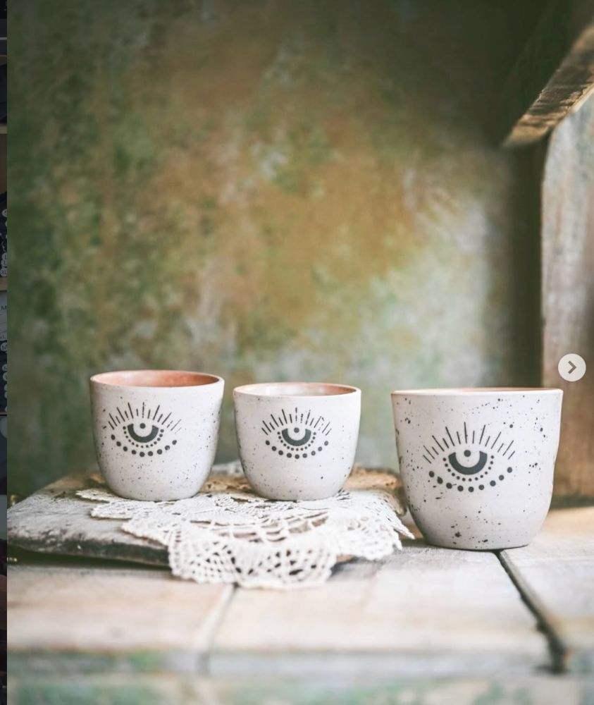
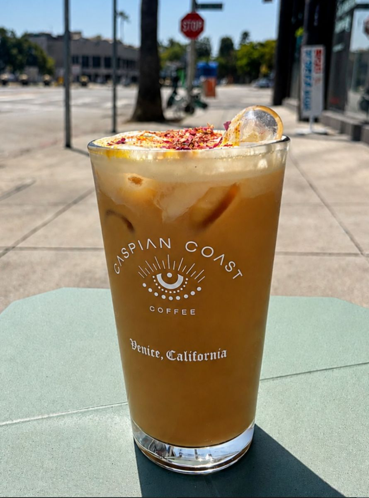

Lazy Sunday
All Day Sundays


Persian Café · Venice Beach, Los Angeles
Is this a Persian café?
We pour saffron lattes, cardamom cold brew and rosewater matcha — Persian spice meeting California light. Our espresso is roasted right here in Los Angeles by Sightglass Coffee, and we let the coast do the rest: the citrus, the salt air, the easy pace of Venice.
Flavors we build with


Order ahead for pickup · roasted in LA by Sightglass · pastries by Kouzeh & Artelice.
Order for pickup →Pillowy seeded buns, spiraled barbari, saffron-kissed sweets — our pastries are made in collaboration with the bakers we love most, then served warm beside your latte.
Curated with Artelice & Kouzeh Bakery.


Tiled benches, Persian murals, a Venice street rolling by the window — a corner of the Caspian on Main Street. Stay for one cup or the whole afternoon.


Tea by the sea. A radio that only had two stations. The red car that always smelled of cardamom. We built this place out of the parts of home we couldn't leave behind — and carried them west.


"Sip your coffee. Sit. There's nowhere you need to be."— House rule

Exclusive Los Ángeles tees and dad hats featuring our Caspian Gothic typography from the iconic mural painted on our wall — a love letter to this city, in two alphabets.
Shop the drop →
